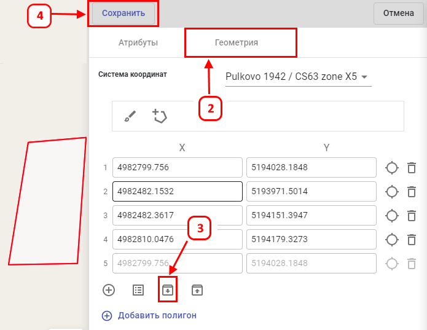

Для создания (добавления) объекта на карте по координатам с помощью импорта из координат из CSV, требуется:
-
Выполнить все предыдущие шаги по вводу данных (1-3) из предыдущего пункта "Создание объектов путём рисования на
карте".
- Перейти на второй этап ввода данных, нажав на кнопку «Геометрия».
- Кликнуть на значок «Импорт координат контура из CSV».
- В появившемся окне, выбрать таблицу CSV и нажать кнопку «Открыть» и нажать кнопку «Сохранить».
